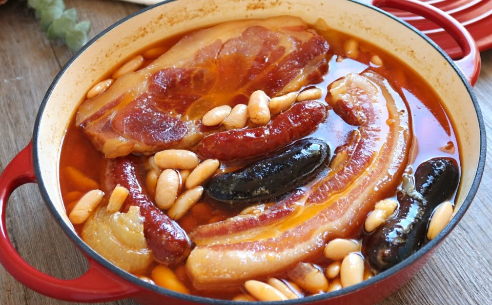
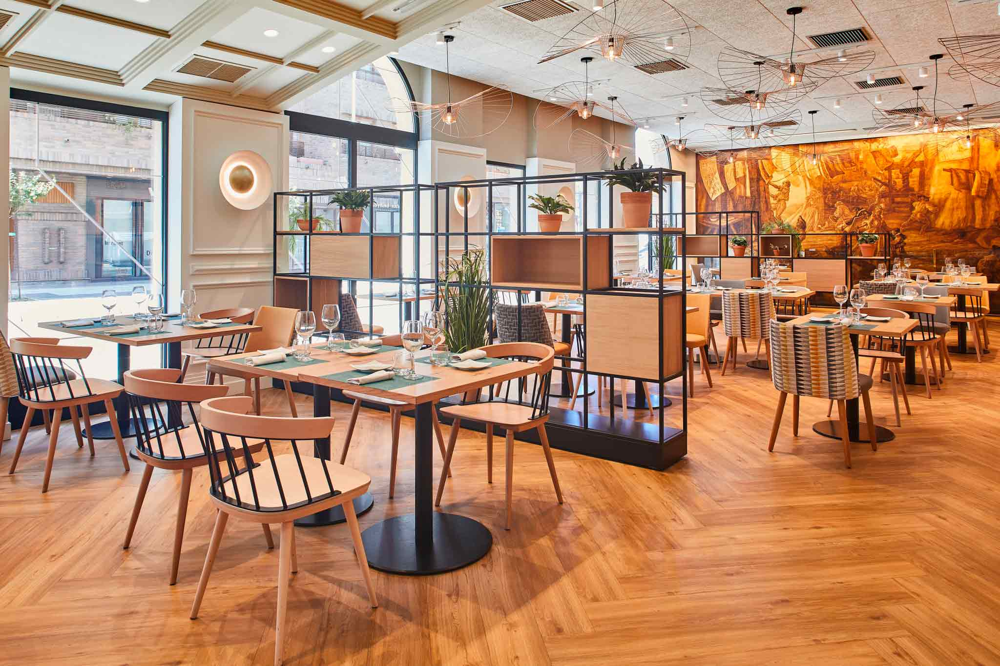
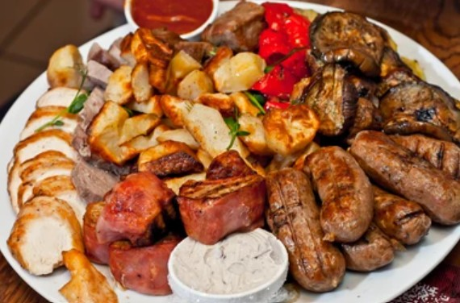
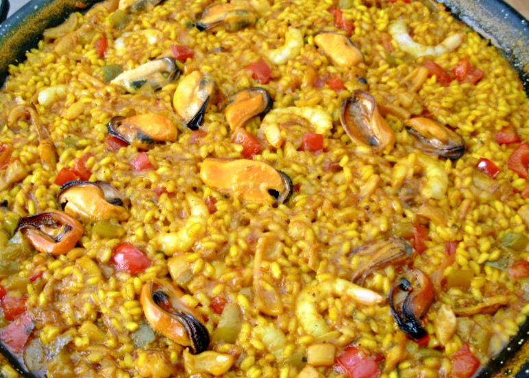

Fabada Asturiana
Receta tradicional con compango asturiano.

Cocina asturiana tradicional con un toque moderno
En nuestro restaurante ofrecemos cocina tradicional asturiana elaborada con productos frescos y de primera calidad.
Disfruta de la mejor fabada, cachopo y sidra natural en un ambiente acogedor y familiar.

Receta tradicional con compango asturiano.

Selección de carnes a la parrilla con sabor auténtico.

Arroz con marisco pelado y caldo lleno de sabor.